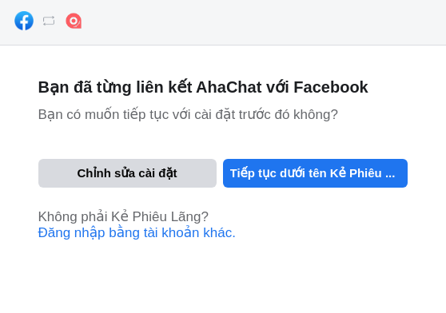
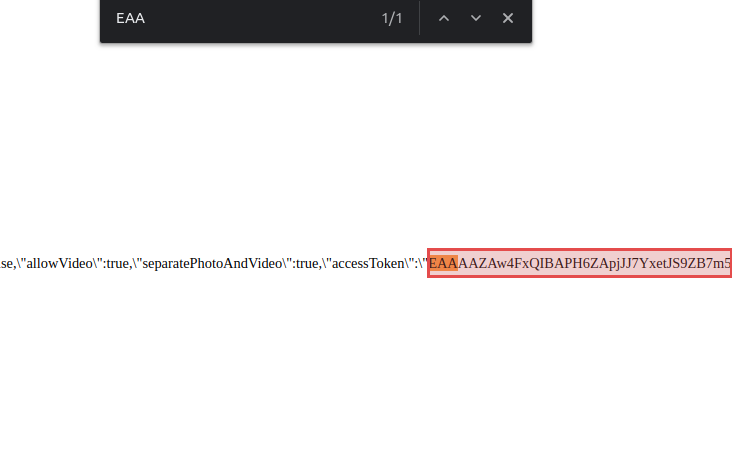
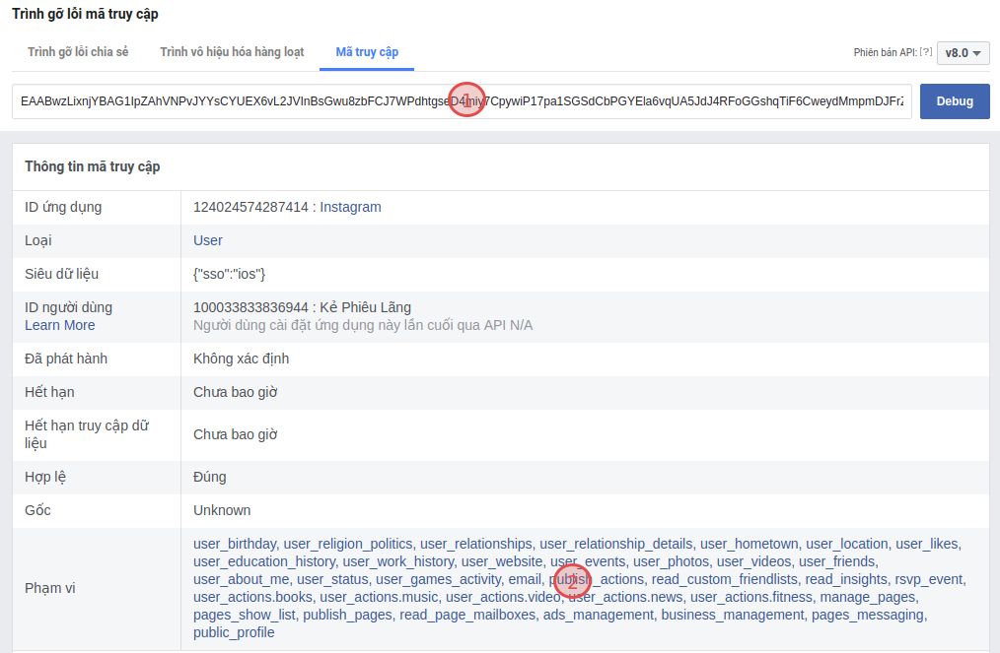
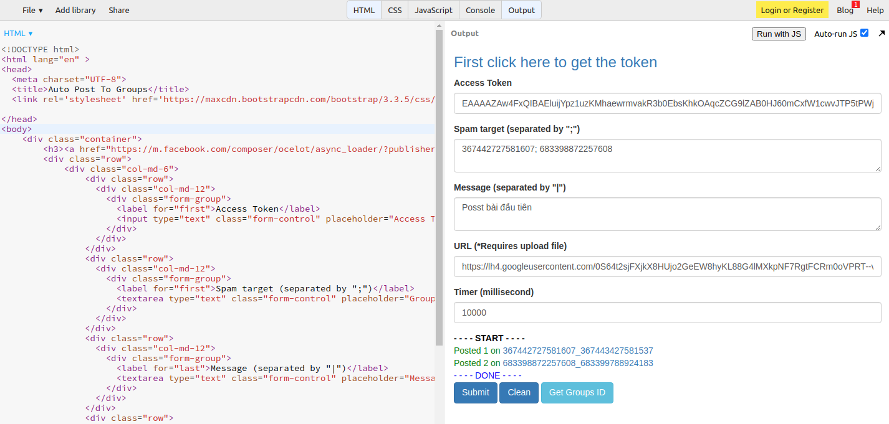

Hướng dẫn cách lấy Token Facebook tuyệt đối AN TOÀN

Ty Nguyen
CEO ❤️ AhaChat. Love babies & chatbot.
Token Facebook có 2 loại là Token theo App và Token theo Tài khoản cá nhân. Trong bài viết này tôi sẽ đi sâu hơn về token theo tài khoản cá nhân vì tính rủi ro của nó và chỉ bạn biết cách lấy token an toàn.
1. Token Facebook theo App
Đây là loại token an toàn nhất, vì nó sẽ có thời gian tồn tại hạn chế và chỉ được facebook cho cung cấp một số quyền cơ bản để thao tác trên page và group. Trường hợp như bạn sử dụng Chatbot AhaChat thì chính là loại token này.

2. Token Facebook theo Tài khoản cá nhân
Đây là loại token full quyền được đại diện bằng một chuỗi các ký tự bắt đầu bằng "EAA...", mục đích của loại token này là đại diện cho tài khoản facebook của bạn để thực hiện các hành động mà bạn có thể thực hiện trên facebook như gửi tin nhắn, like page, post bài vào group thông qua API. So với token theo app thì loại token này có quãng thời gian sống lâu hơn và có nhiều quyền hạn hơn. Để dễ hiểu hơn thì những gì mà Token theo App làm được thì Token theo Tài khoản cá nhân cũng sẽ làm được nhưng ngược lại thì không.
Ví cho việc sử dụng token facebook này là bạn muốn post bài đồng loạt lên nhiều group và nhiều fanpage, để làm điều này thì bạn không thể ngồi đăng nhập facebook vào từng page hay từng group để đăng bài rất tốn thời gian mà chỉ cần điền một danh sách id của group và fanpage, sau đó gọi 1 API để đăng tất cả vào danh sách này.
Hoặc như bạn hay thấy trên thị trường có các công cụ tăng like ảo, tăng comment ảo cũng chính là sử dụng thủ thuật này.
Chú ý là việc sử dụng token facebook có thể giúp bạn tiết kiệm thời gian nhưng bạn không nên tiết lộ token này cho người khác biết vì họ có thể lạm dụng vào mục đích xấu, bằng cách:
- Tuyệt đối không tải các tiện ích lấy token hay đăng nhập số điện thoại và mật khẩu vào các trang web hỗ trợ lấy token vì thông tin của bạn sẽ bị lộ.
- Và nếu bạn nghi ngờ token của mình bị lộ thì ngay lập tức hãy đổi mật khẩu facebook và xóa các tiện ích được cài đặt trong trình duyệt ( Ví dụ chrome là chrome://extensions/ )
Để đảm bảo an toàn cho việc dùng token facebook vào mục đích cá nhân và tiết kiệm thời gian như đã nói ở trên thì bạn nên dùng phương pháp lấy token trực tiếp trên facebook theo các bước bên dưới.
Bước 1: Đăng nhập vào tài khoản Facebook trên trình duyệt tại https://fb.com
Bước 2: Bấm vào đường link này (cũng là của facebook nên yên tâm chỉ có mình bạn biết): https://m.facebook.com/composer/ocelot/async_loader/?publisher=feed
Bước 3: Copy chuỗi ký tự bắt đầu bằng "EAA..." (có thể bấm Ctrl + F để tìm cho nhanh)

Bước 4: Vào link facebook này kiểm tra xem token đã full quyền chưa
https://developers.facebook.com/tools/debug/accesstoken/
(1) : copy token để kiểm tra.
(2) : xem đã full quyền hay chưa.

Vậy là bạn đã hoàn thành công việc lấy token facebook một cách an toàn (chỉ mình bạn biết), nếu bạn có một chút kiến thức về web thì có thể tải thêm đoạn code bên dưới để làm một tool đơn giản phục vụ cho việc đăng bài hàng loạt lên các group nếu muốn.
Sau đó dán vào link bên dưới để chạy:
https://jsbin.com/henivujura/edit?html,output

Bạn có bất kỳ câu hỏi nào liên quan đến cách lấy Token Facebook hay Chatbot? Bạn muốn khởi chạy chiến dịch tiếp cận khách hàng của mình bằng Chatbot với một số lời khuyên chuyên môn từ Đối tác tiếp thị của Facebook? Đừng ngần ngại liên hệ với chúng tôi để có câu trả lời nhanh nhất và hiệu quả nhất! Tận hưởng công cụ chatbot miễn phí của chúng tôi mà không cần phải trả bất kỳ chi phí nào!